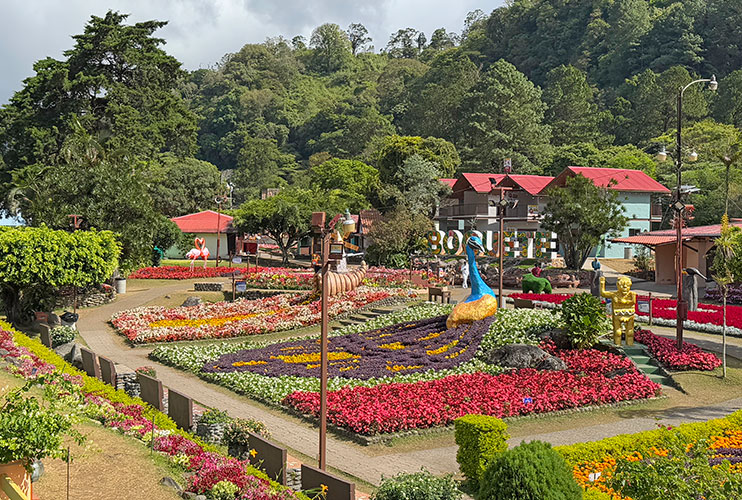

Canal de Panamá

El Canal de Panamá conecta el Océano Atlántico con el Pacífico. Es considerado una de las grandes maravillas de la ingeniería moderna.
Casco Antiguo

El Casco Antiguo, también llamado Casco Viejo, es el centro histórico de la Ciudad de Panamá y patrimonio de la humanidad.
Bocas del Toro

Bocas del Toro es un archipiélago en el Caribe panameño, famoso por sus playas, islas y actividades acuáticas.
Boquete

Boquete, en la provincia de Chiriquí, es conocido por su café de altura, clima fresco y el senderismo al volcán Barú.